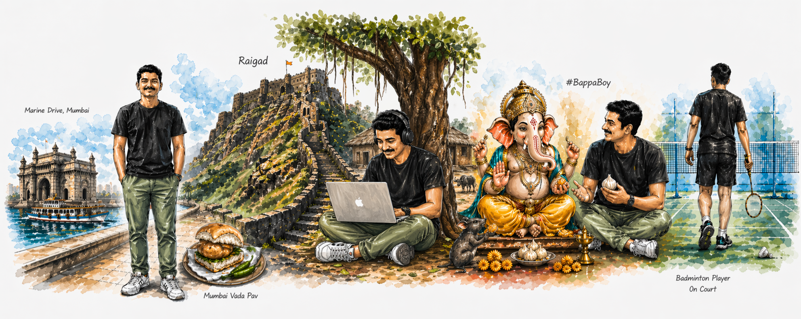
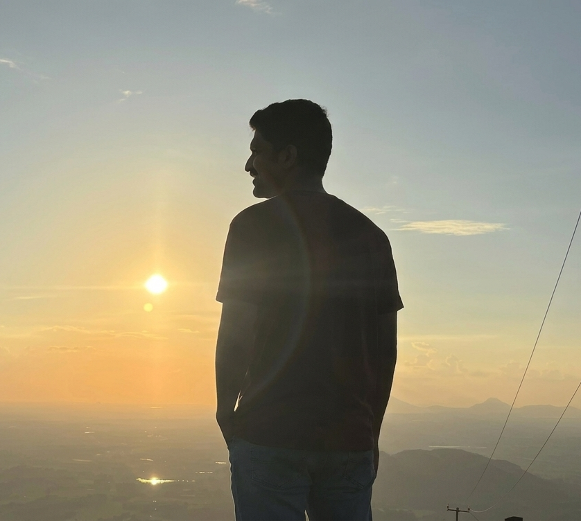
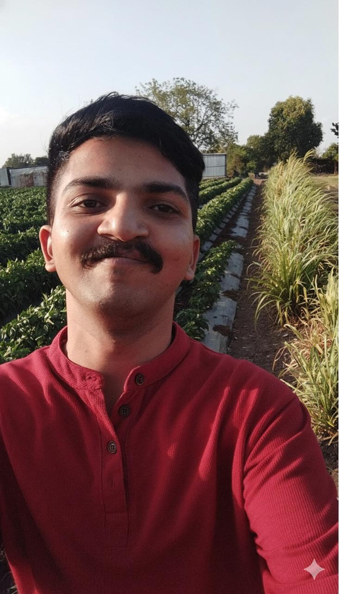
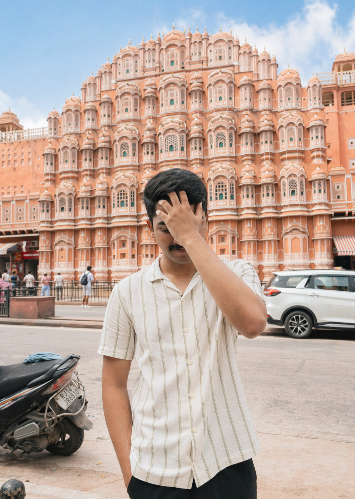

I don’t just design digital products.
I observe how people live, think, and make decisions — and then design systems around that reality.
My work sits at the intersection of behavior, culture, and technology.

DESIGN JOURNEY
My journey into design didn’t start with a clear plan. It started with curiosity — noticing how some products felt effortless while others felt frustrating. Over time, that curiosity "Developer" turned into exploration, where I began experimenting with visual design.
But soon, I realized that visuals were only a small part of the problem. What really interested me was why users struggled, how decisions were made, and how systems influenced behavior. This shift moved me towards UI/UX design, where I now focus on solving problems, simplifying complexity, and designing systems that actually work in real-world conditions.
ROOTS & EVOLUTION
- The Logic Blueprint: Spent 4 years mastering Software Engineering, learning that every elegant system begins with a foundation of rock-solid logic.
- The Artistic Awakening: In the silence of the lockdown, the artist within me came to life. I realized I didn't just want to build products—I wanted to design the emotions that power them.
- Serving the Nation: Currently privileged to serve as a Product Engineer & Designer for DRDL, Hyderabad, contributing to the national mission through precision and high-stakes system design.
- The Next Horizon: My journey is now accelerating towards the #StartupIndia movement, where I aim to blend engineering rigor with UI/UX storytelling to build Bharat's next big impact.
CULTURE + AI + PROBLEM-SOLVING
My approach to design is shaped by two things:
Where I come from, and how I work
today.
Being rooted in Indian culture gives me a deep understanding of diversity, constraints, and real-world behavior. At the same time, I use AI as a thinking partner — not to replace ideas, but to explore, validate, and expand them.
This balance allows me to design solutions that are both practical and forward-thinking.
VISUAL STORY (TRAVEL)
I’ve always been curious about people — how they move, how they interact, and how small details shape their behavior.
"Mala firayala khup avadta."






Traveling across different places has helped me see patterns beyond screens — from how people use public systems to how they adapt to constraints in everyday life. These observations directly influence how I approach design.
I’m interested in systems that create real impact.
Not just products that look good, but products make life clearer, & more meaningful.
And this is just the beginning.